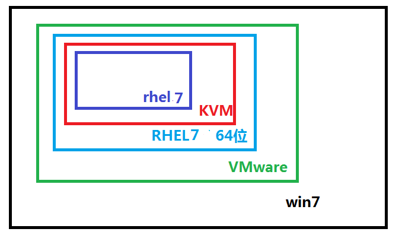
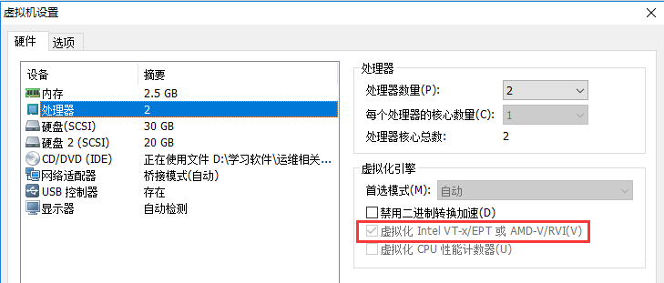
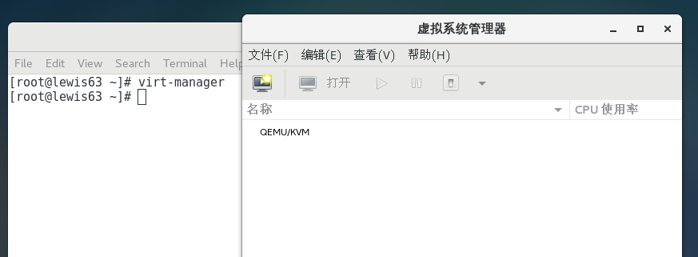
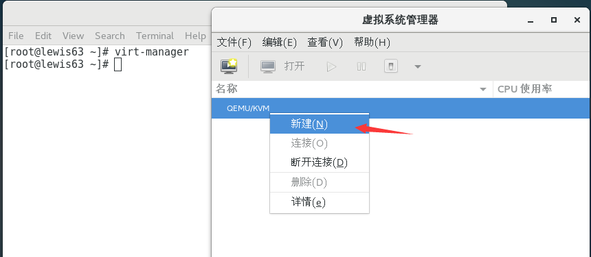
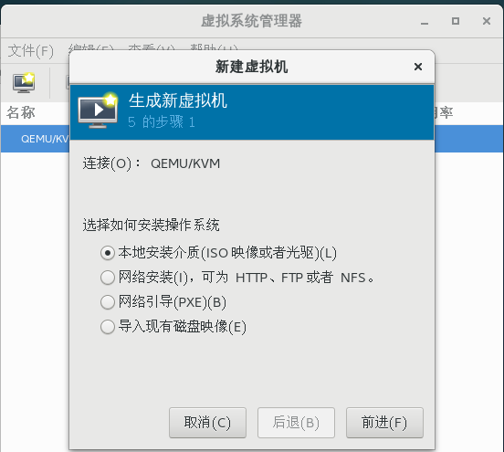
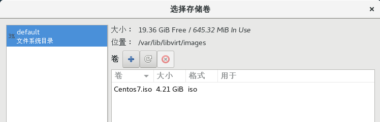
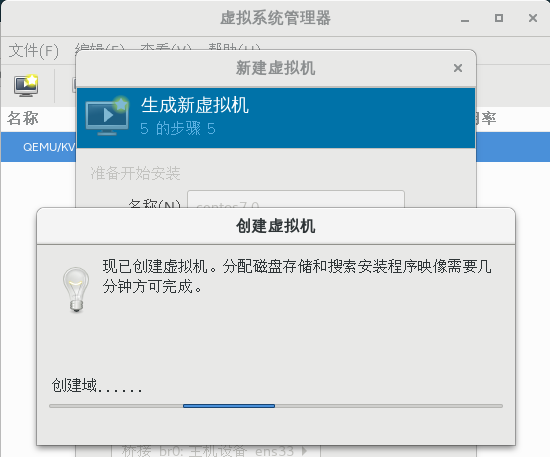
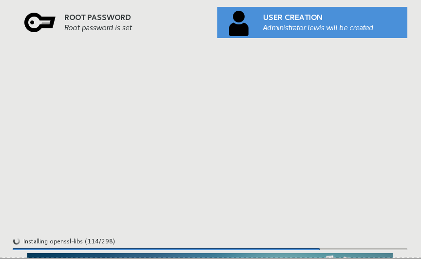

KVM虚拟化
一．虚拟化产品介绍
虚拟化技术：
仿真虚拟化：对系统硬件没有要求,性能最低]
半虚拟化：虚拟机可以使用真机物理硬件，性能高，需要改内核] 只能虚拟和载体同一操作系统
全虚拟化：直接使用物理硬件，性能高
vmware 支持仿真虚拟化
xen 半虚拟化 REHL5自带xen, 安装时需要安装内核 rpm -ivh kernel-xen-xxx.rpm
kvm 全虚拟化 RHEL6 自带kvm
KVM概述：
KVM 即Kernel-based Virtual Machine 基于内核的虚拟机。Qumranet, 依赖于 Intel VT-x， AMD AMD-v KVM是基于内核的虚拟化技术
KVM，是一个开源的系统虚拟化模块，自Linux 2.6.20之后集成在Linux的各个主要发行版本中。它使用Linux自身的调度器进行管理，所以相对于Xen，其核心源码很少。KVM目前已成为学术界的主流VMM(虚拟机监控器)之一。KVM的虚拟化需要硬件支持（如Intel VT技术或者AMD V技术)。是基于硬件的完全虚拟化。而Xen早期则是基于软件模拟的Para-Virtualization。
KVM： 是指基于 Linux 内核的虚拟机(Kernel-based Virtual Machine)。是第一个整合到 Linux 内核的虚拟化技术。在 KVM 模型中，每一个虚拟机都是一个由 Linux 调度程序管理的标准进程，可以在用户空间启动客户机操作系统。KVM支持linux以外的其它系统。比如:windows
一个普通的 Linux 进程有两种运行模式：内核和用户。 KVM 增加了第三种模式：客户模式(有自己的内核和用户模式)
XEN ：需要升级内核，只能支持和物理机系统一样的操作系统。
QEMU：是一套由Fabrice Bellard所编写的以GPL许可证分发源码的模拟处理器，在GNU/Linux平台上使用广泛。QEMU具有高速度和跨平台的特性，QEMU能模拟至接近真实电脑的速度。
QEMU能模拟整个电脑系统，包括中央处理器及其他周边设备。
QEMU和vmware一样都是支持仿真虚拟化，效率比较低。
二．配置KVM 前期准备工作
KVM实验拓扑图

(1)虚拟机内存调成2G以上，要在VMware虚拟中安装KVM,然后在KVM中再安装虚拟机
(2)添加一个20G的硬盘，用于存KVM虚拟机
(3)开启BIOS虚拟化支持
注： 只有64位RHEL6以上系统支持KVM。 32位系统不支持。
查看cpu是否支持虚拟化
Intel：cat /proc/cpuinfo | grep --color vmx
AMD :cat /proc/cpuinfo | grep --color svm
看看flag有没有上面的vmx或者是svm，有的话就是支持全虚拟化技术
如果看不到ｖｍｘ，是因为 VMware CPU没有开启 VT 技术

安装KVM
2.1安装KVM模块、管理工具和libvirt
先配置本地yum源
[root\@lewis63 ~]# cat /etc/yum.repos.d/Centos-Base.repo
[base]
name=CentOS7
baseurl=file:///mnt
enabled=1
gpgcheck=0
yum install qemu-kvm libvirt libguestfs-tools virt-install virt-manager libvirt-python –y
说明：
qemu-kvm ： kvm主程序， KVM虚拟化模块
virt-manager： KVM图形化管理工具
libvirt： 虚拟化服务
libguestfs-tools : 虚拟机的系统管理工具
virt-install ： 安装虚拟机的实用工具 。比如 virt-clone克隆工具就是这个包安装的
libvirt-python ： python调用libvirt虚拟化服务的api接口库文件
2.2启动服务
systemctl start libvirtd;systemctl enable libvirtd
[root\@lewis63 ~]# systemctl is-enabled libvirtd #查看是不是开机启动
enabled
确定正确加载kvm 模块，检查 KVM 模块是否成功安装
[root\@lewis63 ~]# lsmod | grep kvm
kvm_intel 170086 0
kvm 566340 1 kvm_intel
irqbypass 13503 1 kvm
2.3使用virt-manager 命令建立虚拟机
将kvm管理工具从英文界面，切换成中文界面
LANG='zh_CN.UTF-8'
执行virt-manager后，弹出如下界面：

配置KVM网络桥接功能
网桥介绍: 我们经常所说的Bridge设备其实就是网桥设备，也就相当于现在的二层交换机，用于连接同一网段内的所有机器，所以我们的目的就是将网络设备ens33添加到br0，此时br0就成为了所谓的交换机设备，我们物理机的eth0也是连接在上面的。
添加桥接设备br0： 相当于一个二层交换机，目的是让kvm虚拟机通过ens33可以连接外网
安装桥设备工具
rpm -ivh /mnt/Packages/bridge-utils-1.5-9.el7.x86_64.rpm
把etns33绑到br0桥设备上
[root\@lewis63 ~]# cd /etc/sysconfig/network-scripts/
[root\@lewis63 network-scripts]# cp ifcfg-ens33 ifcfg-ens33.bak
[root\@lewis63 network-scripts]# vim ifcfg-ens33
TYPE="Ethernet"
BOOTPROTO="none"
NAME="ens33"
DEVICE="ens33"
ONBOOT="yes"
BRIDGE="br0"
生成桥设备的配置文件
[root\@lewis63 network-scripts]# vim ifcfg-br0
DEVICE="br0"
NM_CONTROLLED="yes"
ONBOOT="yes"
TYPE="Bridge"
BOOTPROTO=none
IPADDR=192.168.1.63
NETMASK=255.255.255.0
GATEWAY=192.168.1.254
DNS1=225.5.5.5
注：TYPE="Bridge" B大写
systemctl restart network
查看桥接的信息
[root\@lewis63 network-scripts]# brctl show
bridge name bridge id STP enabled interfaces
br0 8000.000c290eebb0 no ens33
virbr0 8000.5254001de1ba yes virbr0-nic
新建KVM虚拟机
4.1创建一个分区，用于存放安装好的Linux操作系统
fdisk /dev/sdb
fdisk /dev/sdb
。。。
[root\@lewis63 ~]# lsblk /dev/sdb
NAME MAJ:MIN RM SIZE RO TYPE MOUNTPOINT
sdb 8:16 0 20G 0 disk
└─sdb1 8:17 0 20G 0 part
mkfs.xfs /dev/sdb1 #格式化
mount /dev/sdb1 /var/lib/libvirt/images/ #安装虚拟机，默认存放的路径
注：准备系统镜像：把centos7.4镜像上传到/var/lib/libvirt/images/目录下
dd if=/dev/sr0 of=//var/lib/libvirt/images/Centos7.iso
[root\@lewis63 ~]# virt-manage #在linux图形化界面操作





KVM虚拟机常用命令
[root\@lewis63 ~]# virsh list #列出在运行的虚拟机
[root\@lewis63 ~]# virsh start centos7.0 #启动centos7.0虚拟机
[root\@lewis63 ~]# virsh shutdown centos7.0 #关闭centos7.0虚拟机
[root\@lewis63 ~]# virsh autostart centos7.0 #设置centos7.0虚拟机为物理机开机后，自动启动
测试：
reboot后，没有发现kvm虚拟机开机自动启动。
解决：
chkconfig --list libvirtd #开机启动了
libvirtd 0:off 1:off 2:off 3:on 4:on 5:on 6:off
#设置开机自动挂载sdb1，否则开机启动不了虚拟机
[root\@lewis63 ~]# echo "/dev/sdb1 /var/lib/libvirt/images xfs default 0 0" >> /etc/fstab